R3-v2 · 30 October 2026 · Owner visual feedback pending
Two choices.
One budget. One timeline.
Understand what a larger deposit frees up each month, deliberately try a smaller deposit, then watch both choices unfold together.
Try R3-v2 Open preserved R3-v1
What changed from R3-v1
| Moment | R3-v1 | R3-v2 |
|---|---|---|
| Monthly budget | A separate monthly-additions lesson returned later. | Step 5 establishes repayment taking its share and the remainder available to save or invest. |
| Smaller deposit | The current deposit carried forward without an explicit reduction. | Step 6 visibly takes money out of the deposit into retained cash. The earlier choice stays as a reference. |
| Retained money | Fixed half-cash, half-investment example. | Step 7 lets you choose the split. The retained amount comes directly from the alternative deposit. |
| Comparison and time | One selected choice, with year-sized snapshots. | Steps 8–9 show both opening positions and their different monthly contributions, then synchronize both houses and balances. The first three changes are individual months. |
Watch the revised sequence at normal speed
Unedited 1× browser recordings. Mobile is Chromium touch emulation, not a physical phone. Both recordings include allocation changes, a paused transition, the opening comparison, monthly movement, loss, maturity and reversible time.
Desktop · 1280 × 720
Mobile emulation · 390 × 844
Try it
- Set a deposit in the first five lessons, then go to 6. Watch the reduction; your earlier choice remains labelled. Starting at the minimum explicitly introduces the larger comparison first.
- At 7, move between all cash and all investment. The total retained money stays the same. Opening allocation uses five 25% settings.
- At 8, compare money kept now and money available each month. The same £2,000 budget funds both choices, so their contributions differ.
- At 9, play the first months, pause, scrub to year 3 and year 30, then reverse. Money added and investment gain/loss remain separate. Neither choice is declared a winner.
The original deposit remains editable to £100,000. The smaller comparison is bounded below that at £99,999, with an explicit entry message. All £100,000 of allocatable capital can go into the larger deposit; buying costs are separately funded and essential reserves are outside that amount.
Key states

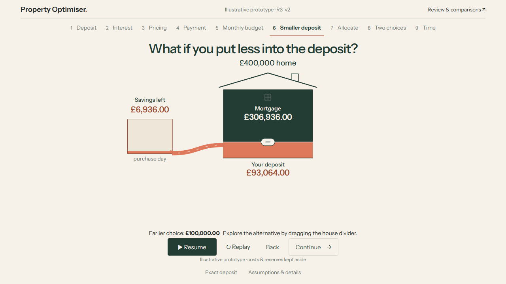

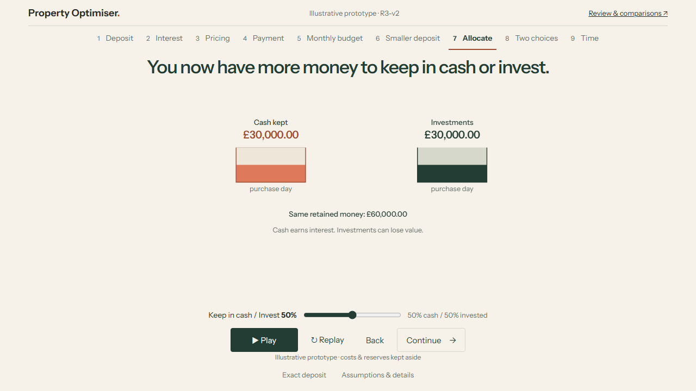

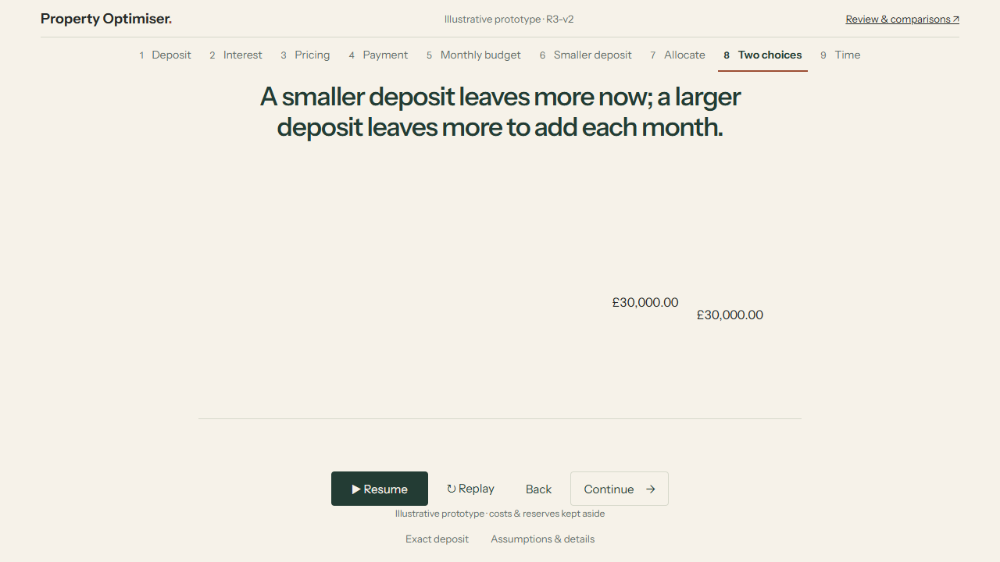

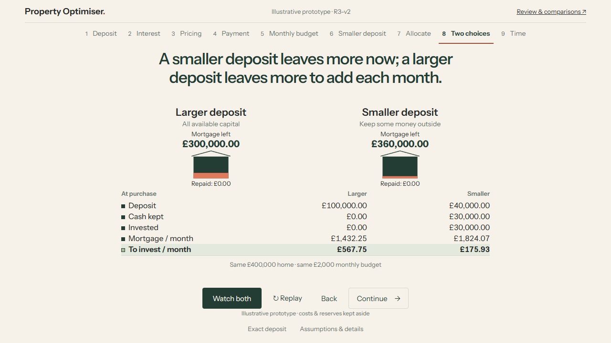

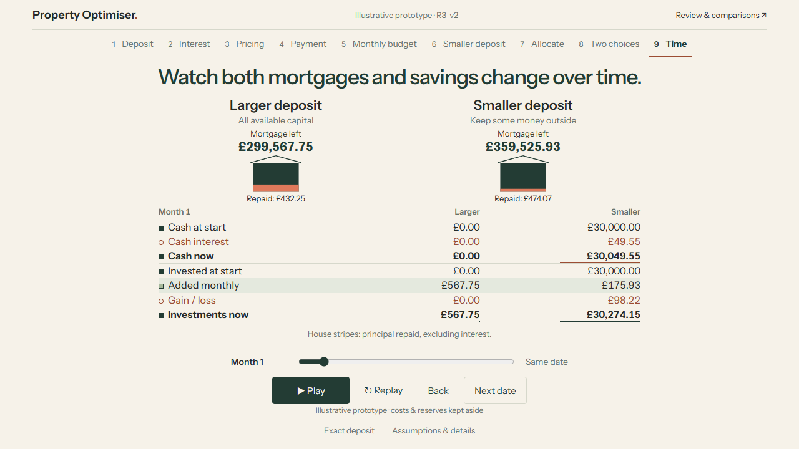

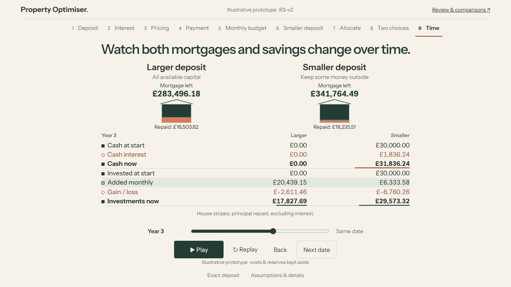

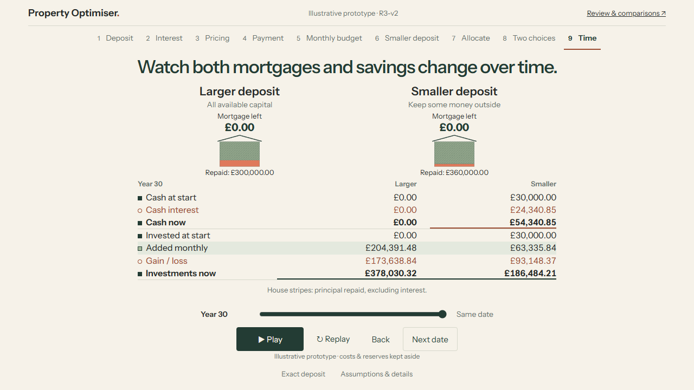

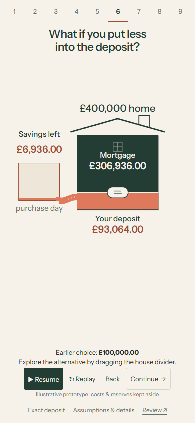

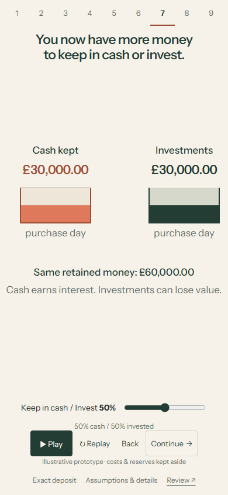

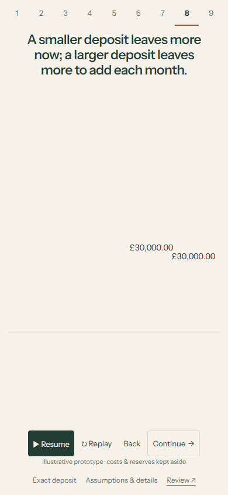

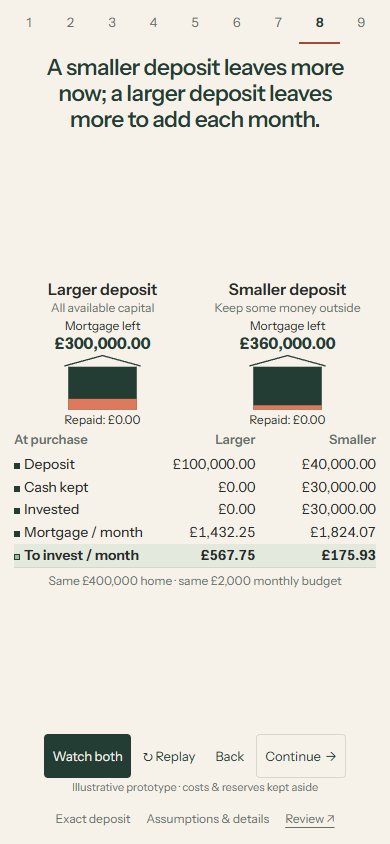

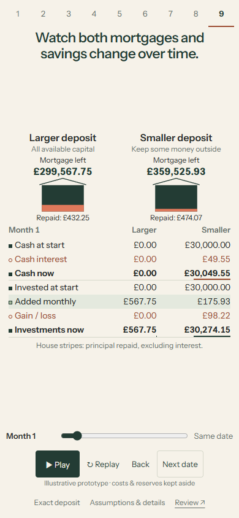

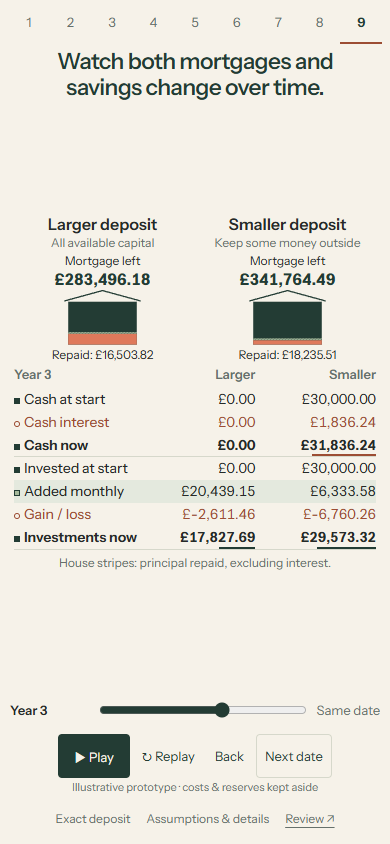

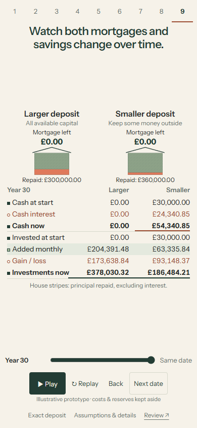
Illustrative data and provenance
This is the expressly authorised interface prototype. Production successor implementation and validation remain later work. The browser selects complete offline fixtures; it does not calculate mortgages or financial projections.
The inherited fictional scenario is a £400,000 home, £100,000 allocatable capital, a 30-year mortgage and £2,000 monthly mortgage-and-saving budget. Fictional opening rates are 4.5% above 80% LTV and 4.0% at or below it, fixed for the term. The original engine supplies mortgage payment and debt; only principal repayment replaces debt in the unchanged house-price area.
Cash assumes 2% annual effective growth. Both choices invest all monthly capacity after their respective payment at month end. The same authored investment path is +4%, −18%, −6%, then +4% annually. It is neither a forecast nor a probability. Opening assets, monthly additions and gains/losses are separately labelled. No tax, fees, inflation, withdrawals, rate resets or house-price appreciation are modelled.
Fixture identity r3-v2-choices-2026-10-30-v1, effective 2026-10-30. Decimal arithmetic uses 50-digit precision and display-only ROUND_HALF_UP. Display residuals preserve penny reconciliation. The 55 compressed date/allocation tables total approximately 91 MB and load on demand. Discrete dates are purchase, months 1/2/3/6/12 and years 3/5/10/20/30. Asset strips are schematic and cap at £60,000; read exact amounts. Fixture provenance and boundary examples · Inherited mortgage evidence.
Checks and remaining limits
Eight Node tests and five Python tests pass, including the inherited 60,001-state mortgage reference, independent 100-digit debt/cash/investment references, and reconciliation of all 3,300,055 new rows. This establishes illustrative consistency, not production successor validity.
Final author checks cover all nine lessons at 390×844, 390×664, 320×568, 1280×720 and 1440×1000; keyboard, exact entry, allocation extremes, minimum-deposit handling, pause/replay/back, reduced motion, stale requests, emulated touch and accessible zoom/reflow. Overlap checks compare the actual lesson, comparison and controls. Enlarged text may scroll. Normal-speed video playback and decoded frames were checked.
Independent review identified and helped resolve layout overlap, debt-caption contrast, unclear column association, a keyboard announcement mismatch, ineffective comparison replay, and stale allocation/date intent. The final remaining overlap was corrected and covered by final author regressions; the independent review is not represented as an independent full-device acceptance campaign.
choices | choices-lifecycle | choices-transition | browser | touch | access | transition | capture | media | preservation | Verification summary
No physical-device testing, Safari/Firefox campaign, screen-reader speech audit, novice comprehension study or owner visual acceptance. Technical passes do not answer whether the explanation feels clear to a new viewer. This is a bounded prototype, not a full calculator, optimum or financial recommendation.
Exact source and publication
Tested implementation 231175e71cc227858537d8ba89a28ea8fa3765b2, branch design/m8-r3-v2, based exactly on R3-v1 wrapper 5dd137ec632e212701d072ced7901d912894fe35. The wrapper directly follows tested R3-v1 5ec7a65da8aab79513f47764d67f48194e107b0b and changes only its review page and JSON.
Exact source/wrapper/asset publication identities · Review metadata · SHA-256 asset manifest · Preserved R3-v1 publication
Owner feedback
Can you follow the deliberate switch to a smaller deposit, explain the two competing advantages before time moves, and distinguish money added from gain or loss as both choices unfold?
ACCEPT / REVISE / TRY ALTERNATIVE / STOP. Work stops here for visual feedback. No R4, production-engine implementation, calculator expansion or main merge.